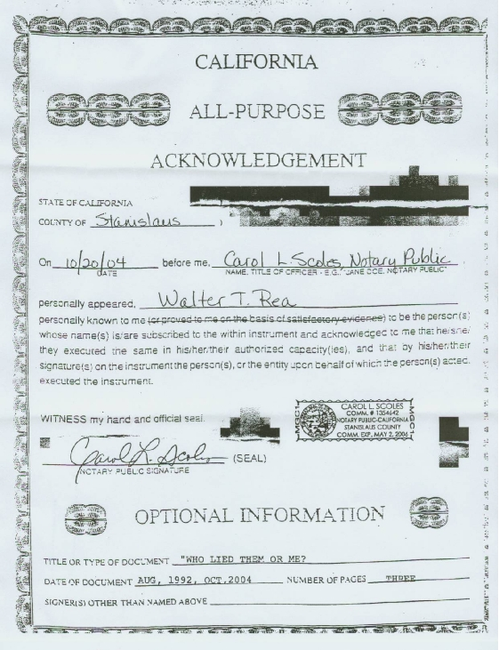
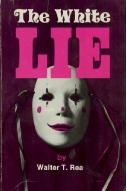

Walter Rea's 2004, three page letter sets the record straight about his views and the gossip about him. In his letter he states, "Recently we have heard that we have repented of writing the book, yet no one on the planet has ever discussed with me either my ‘repentance’ or my ‘recanting.’" Included is a notarized document.
Rea must have had D. M. Canright in mind to go to the trouble to make this notarized letter because of Adventism's claim that D. M. Canright recanted after leaving the church and "that he wanted to come back but it was too late and he was a lost man."
August 1992 (RENEWED Oct. 2004)
In the December 1991 issue of Spectrum, which calls itself "The Journal of the Association of Adventist Forums", there appeared an article by Jerry A. Gladson, entitled “Convert To Scholar: An Odyssey In Humility.” Jerry Gladson is Vice President and Dean of Academic Affairs of the Psychological Studies Institute, an interdenominational graduate school of Psychology and Religion in Atlanta, Georgia. Previous to this he was Professor of Religion at Southern College [now Southern Adventist University], from which he received his B. A. He holds an M.A. and a Ph.D. in Old Testament from Vanderbilt University.
In the article he says “neither have we dealt adequately with the questions raised by Walter Rea regarding Ellen White. Although his claims tended to be overstated, the church has gradually come to concede almost all his major points. In 1990, Fred Veltman reported to the church at large his findings in two articles appearing in Ministry Magazine, “The Desire of AgesProject, The Data” (October 1990, December 1990) careful to point out that he had examined only a small section of The Desire Of Ages, thus making it difficult to generalize. Veltman concluded that Ellen White did use sources without giving credit, and that she, at times even denied doing so. The Desire Of Ages, he noted, was dependent on secondary materials. On the whole, an average of about 31 percent of the 15 chapters was in some way indebted to other material. Worse, her history, chronology, and theological interpretation often cited confidently by Adventists were not always reliable.” Spectrum, volume 21, number 5, December 1991.
While it is true that the church has tried to conceal information from it’s members as to what issues have been resolved by the studies of both Fred Veltman and myself, some of those issues have been admitted and / or resolved. Some of these are:
- There was massive borrowing on all levels of Mrs. White’s writings. The church had never before either known or admitted such borrowings to the membership or the public, no matter what we continue to read from the Review or other writers. (Glendale Tapes, 1990).
- What was written was not always accurate, that is, she made mistakes. It cannot be said therefore that she was always speaking for God. (Robert Olson, Ron Graybill, Glendale and Long Beach Tapes).
- Others helped her to do the gathering of material and also to do the writings. (Graybill paper, 1919 Bible Conference).
- All of what she said she saw did not come from visions. (Don McAdams, Ron Graybill, Robert Olson Papers, White Estate).
- All that came to the church in these writings were not inspired. (1919 Bible Conference, Robert Olson, White Estate, etc.).
- She was influenced by others in what she wrote and those that influenced her never claimed to be influenced by God or inspired themselves. (1919 Bible Conference, Robert Olson, White Estate).
- Mrs. White ate meat most of her life and did not take much of the advice she claimed came from God. (White Estate papers, Ron Graybill study.).
- She was not as uneducated and unread as we have always been told.
Most of these issues are now settled in the church, whether or not each individual has settled them for themselves. The discussion about ‘Inspiration’ will go on as long as people look for ways to maintain views that are no longer logical or tenable.
What has concerned me more than the reaction of the system of Adventism to what was found has been the reaction of so many people to me personally. It is indeed astonishing to find some people in Adventism that profess to believe and keep the ten commandments and listen to them violate the one that says ‘THOU SHALT NOT BEAR FALSE WITNESS AGAINST THY NEIGHBOR.’ It would be impossible to relate all the false and nasty tales and stories that have been told about me by people who have never met me or taken the time to even read the book The White Lie. Even the system keeps on lying. I know of no one with an average I.Q. who believes that the Review speaks with all knowledge or is ‘inspired.’
It is also interesting to see how a denomination that has failed to recognize their fellow human beings in the religious world, as anything other than the whores and harlots of the book of Revelation and have publicly said so, and then profess to be so hurt when someone points out to them some of their own failings and faults, as we have certainly done in the book The White Lie. Recently we have heard that we have repented of writing the book, yet no one on the planet has ever discussed with me either my ‘repentance’ or my ‘recanting.’ Why would I ask forgiveness for what all scholars recognize as the truth? I AM PROUD of what I have accomplished by the research and for the few who hypocritically claim to have been hurt by reading it, (and some have even claimed they were hurt when they have not read it) we have heard from thousands who have been blessed because of the material that we found and brought to the attention of the Church.
No one can change history no matter how or why they try, and that history is—that the then President of the General Conference, Neal Wilson, at my urging, asked eighteen scholars of the Church to meet with me and review my material on January 28, 29, 1980, at the Glendale Adventist Hospital. Those scholars were:
- G. Ralph Thompson, General Conference Chairman
- D. R. McAdams, College President
- R. W. Olson, White Estate
- Jack Provonsha, Loma Linda Minister
- H. L. Calkins, Conference President
- W. L. Richards, Bible Dept. Pacific Union College
- H .E. Douglass, Pacific Press Publishing Association
- Mrs. Ottilie Stafford, English Department
- F. E. J. Harden, General Conference, Department of Education
- M. C. Torkelson, Administration
- W. G. Johnsson, Andrews University
- L. D. Venden, Loma Linda Minister
- Harold Lance, Attorney at Law
- J. O. Waller, English, Andrews University
- W. R. Lesher, General Conference
- Mervyn A. Warren, Oakwood College
- Walter D. Blehm, President, Pacific Union Conference
- J. J. Wiley, Attorney at Law, U.S.C. Law
At the end of the meeting they made the following recommendations.
- That we recognize that Ellen White, in her writings, used various sources more extensively than we had previously believed.
- That, as soon as possible, a plan be developed for thoroughly informing our church administrators concerning the nature and extent of Ellen White’s use of sources.
- That immediate study be given to a plan for educating the church in easily grasped steps on the subject of inspiration and Ellen White’s use of sources.
- That an in-depth study on the writing of the Desire of Ages be implemented.
- That a person trained in scholarly methodology be asked to work with Elder Rea.
- To express our appreciation to Elder Rea for the enormous amount of work he has done.
I rest my case. With that kind of endorsement, would any of you have done any differently? It was only when the Church backed out of the agreement that I then wrote The White Lieso that all who wanted to know could know what the committee had promised they should know. Who lied, them or me?
Now that you know we love you all.
[Letter corrected for spelling and punctuation, formatted for HTML, emphasis supplied.]
Notarized statement by Walter T. Rea


How to get Walter Rea's book The White Lie
The White Lie exposes Ellen's stealing habits of getting materials for her books from uninspired sources and not from God as she claimed.
Published by M&R Publications Box 2056, Turlock, CA 95381. ISBN-0-9607-424-1-7.
Sections
Robert K. Sanders, Founder and Editor of Truth or Fables, 1997–2012
Life Assurance Ministries assumed ownership of Truth or Fables in 2012
© 2016 Life Assurance Ministries. All rights reserved.